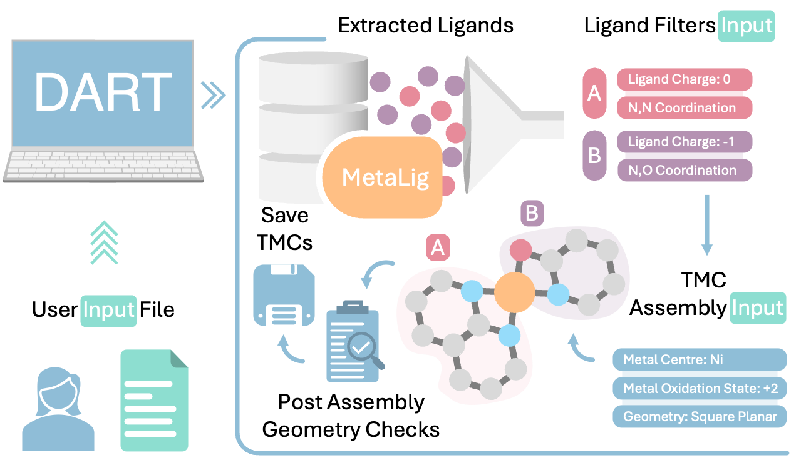

DART: Directed Assembly of Random Transition Metal Complexes
Welcome to the DART platform, a cutting-edge suite of tools for the exploration of coordination chemistry! Developed by the CCEM group at Trinity College Dublin, DART is designed as an accessible and simple-to-use software to generate mono-metallic transition metal complexes based on ligands from decades of crystallographic data.
DART integrates a collection of several modules:
- MetaLig :
Explore the comprehensive MetaLig database with 41,018 ligands extracted from the Cambridge Structural Database, complete with high-quality formal charge assignments.
- Assembler :
Assemble novel transition metal complexes in a matter of seconds, guided by a single configuration file for precise control over the resulting structures.
- Ligand Filters :
Assemble complexes with exactly defined sub-structures by applying advanced ligand filters for each binding site.
Your role: DART is designed for researchers in chemistry. While you have to think about the chemistry yourself, DART will allow you to explore the chemical space you want with the ligands you need.
{kind=link}

A DART user generates novel molecular complexes for their research on square planar Ni(II) complexes.
Who?
Experimental Chemists: Explore the effect of varying ligands in your complexes.
Computational Chemists: Model complexes from a user-defined chemical space.
Cheminformatics Developers: Generate novel complexes for high-throughput screening.
Why?
Advanced Complex Control: DART supports the assembly of a wide range of octahedral and square-planar geometries. Want more? Leave us a feature request!
Intuitive Interface: Users interact with DART via simple configuration files, no Python required.
Open-Source: DART is an open-source tool developed in Python, making it entirely free to use.
Getting Started
Are you ready to get started? Install DART, explore our hands-on quickstart guide or read through the ideas and concepts behind DART.
How to Use DART